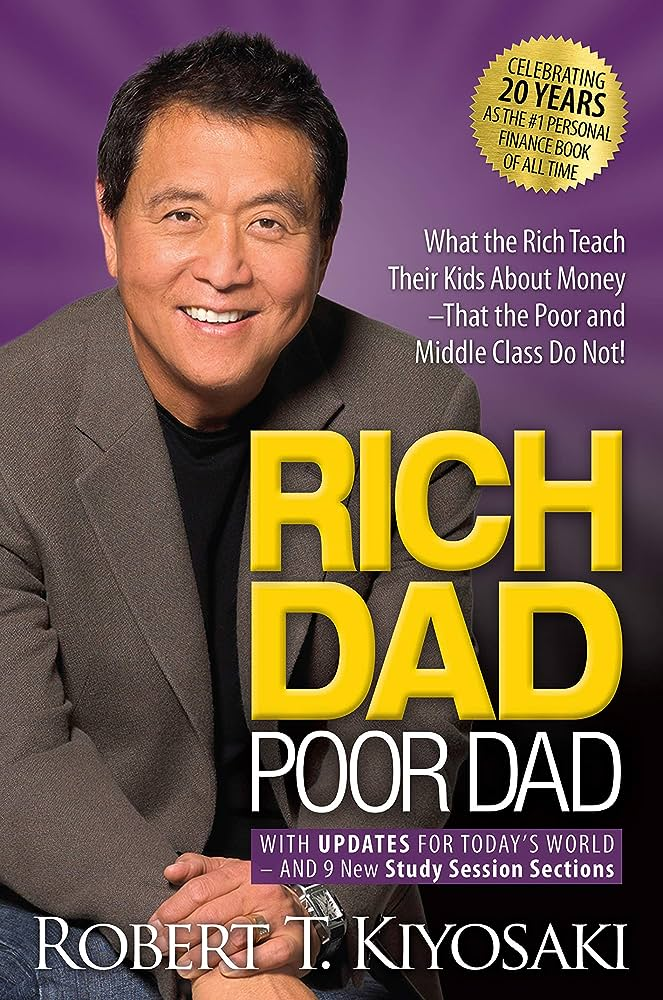
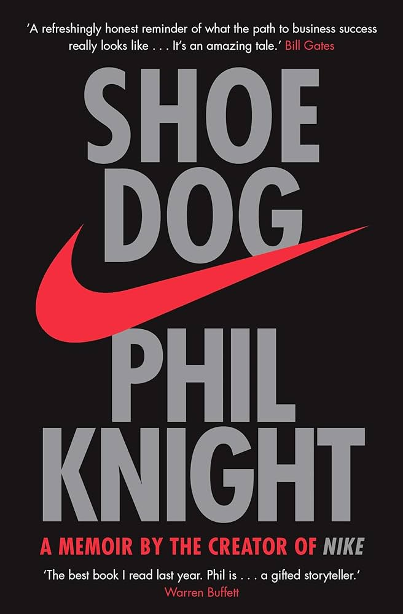
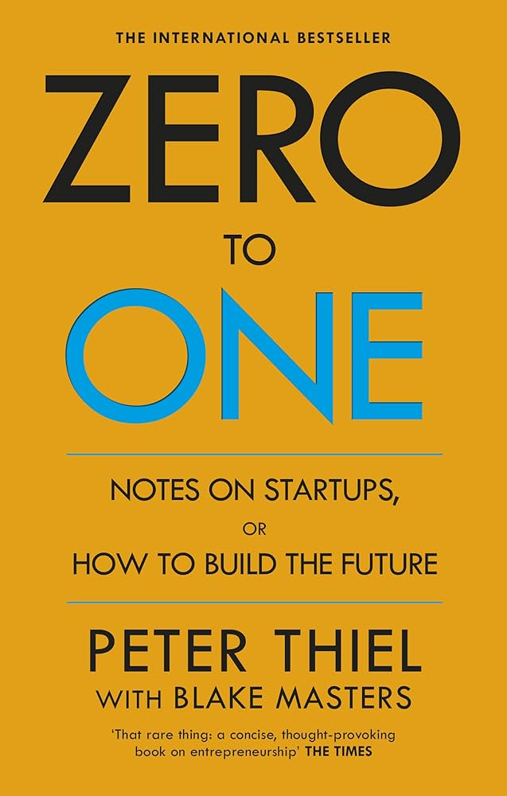
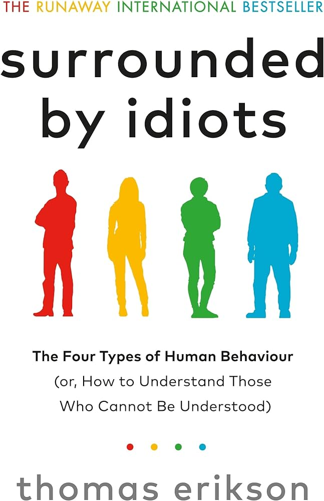
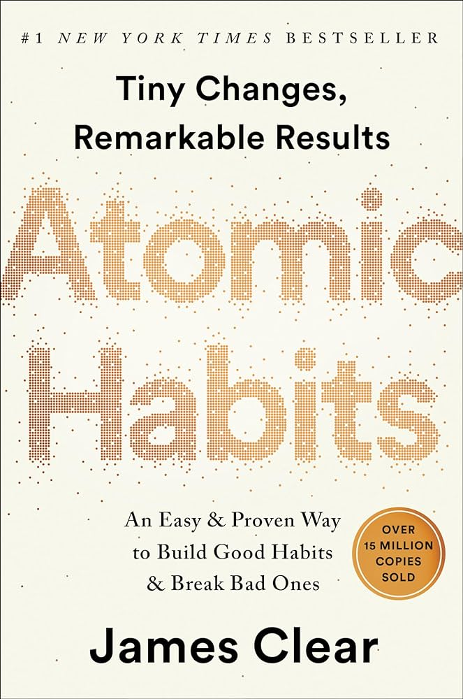
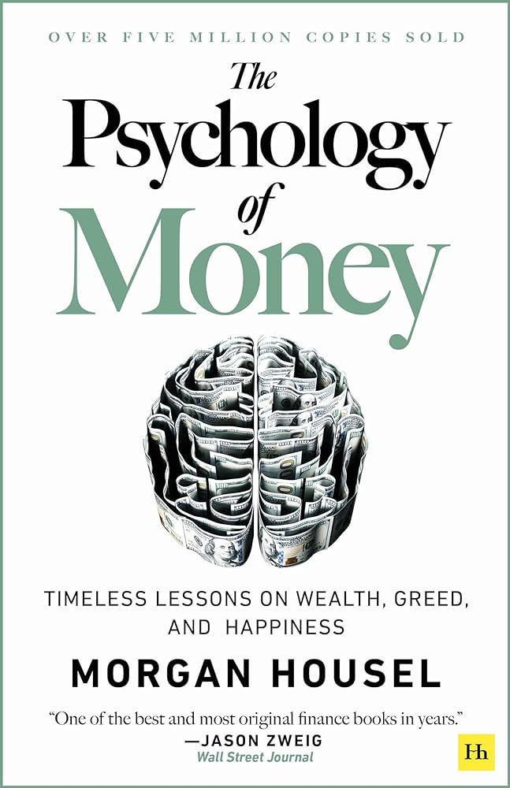
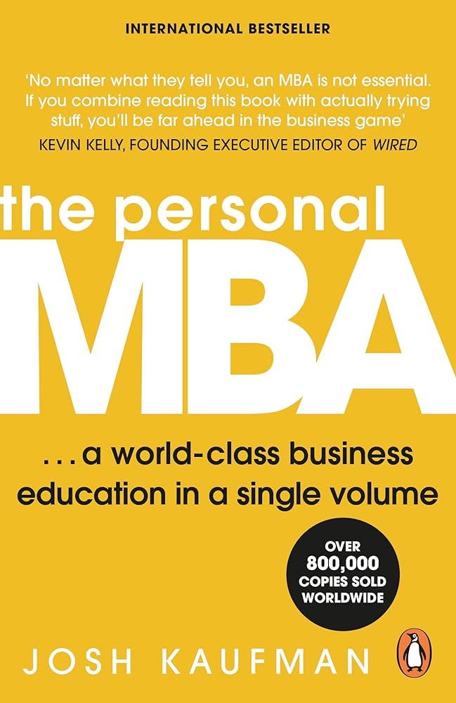
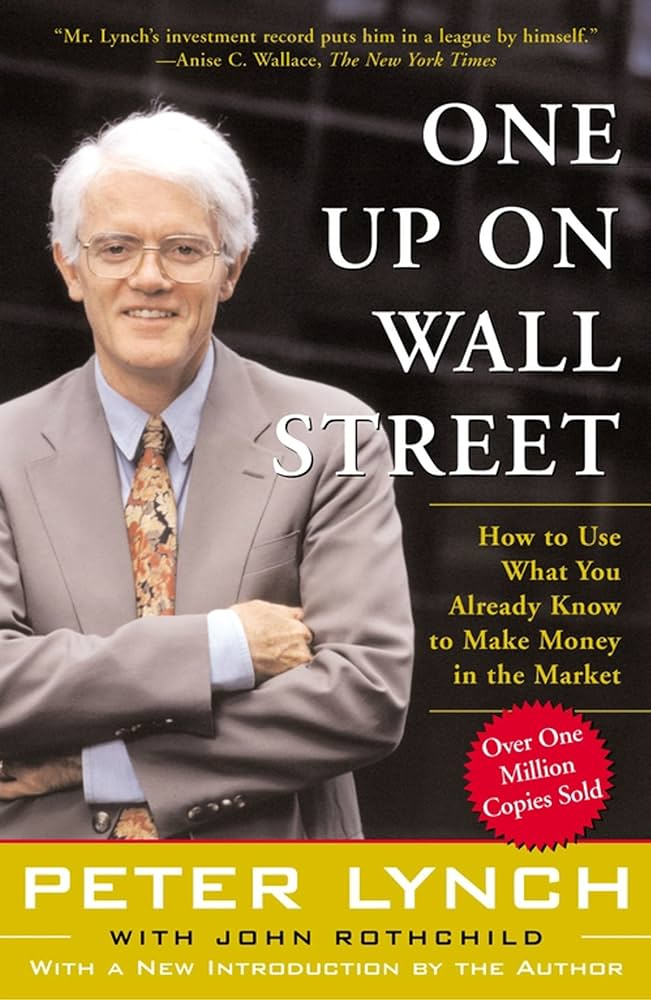
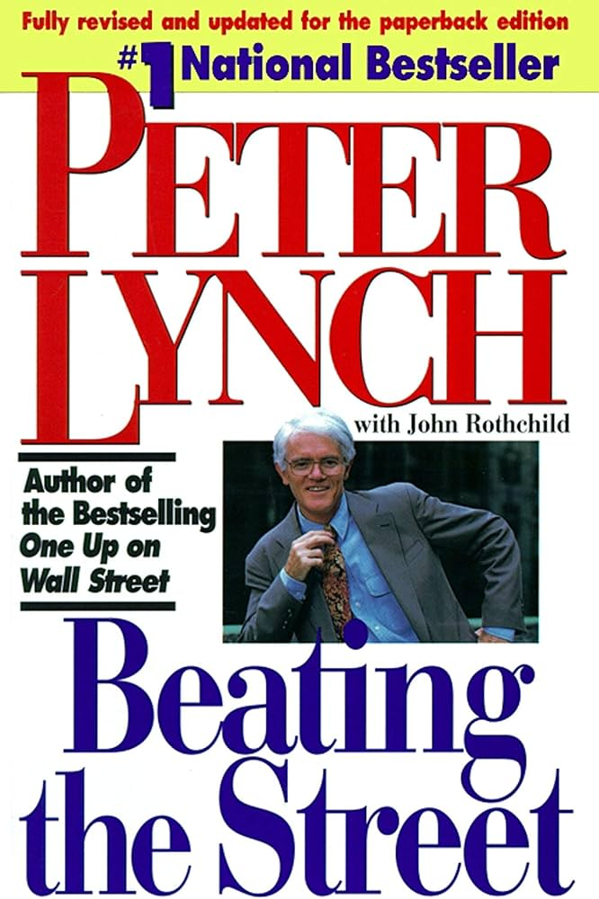

Rich Dad Poor Dad
Taking to heart the message that the poor and middle class work for money, but the rich have money work for them, the author lays out a financial philosophy based on the principle that income-generating assets always provide healthier bottom-line results.

Shoe Dog: A Memoir by the Creator of NIKE
In 1962, fresh out of business school, Phil Knight borrowed $50 from his father and created a company with a simple mission: import high-quality, low-cost athletic shoes from Japan. Selling the shoes from the boot of his Plymouth, Knight grossed $8000 in his first year. Today, Nike's annual sales top $30 billion. In an age of start-ups, Nike is the ne plus ultra of all start-ups, and the swoosh has become a revolutionary, globe-spanning icon, one of the most ubiquitous and recognisable symbols in the world

Zero To One. Notes On Start Ups, Or How To Build The Future
The next Bill Gates will not build an operating system. The next Larry Page or Sergey Brin won’t make a search engine. If you are copying these guys, you aren’t learning from them. It’s easier to copy a model than to make something new: doing what we already know how to do takes the world from 1 to n, adding more of something familiar. Every new creation goes from 0 to 1. This book is about how to get there.

Surrounded By Idiots: The Four Types of Human Behaviour (or, How to Understand Those Who Cannot Be Understood)
Do you ever think you're the only one making any sense? Have you ever tried to reason with your partner with disastrous results? Do long, rambling answers drive you crazy? Does your colleague's abrasive manner get your back up? You are not alone. After a disastrous meeting with a highly successful entrepreneur, who was convinced he was 'surrounded by idiots', communication expert and bestselling author, Thomas Erikson dedicated himself to understanding how people function and why we often struggle to connect with certain types of people.
1984
En el año 1984 Londres es una ciudad lúgubre en la que la Policía del Pensamiento controla de forma asfixiante la vida de los ciudadanos. Winston Smith es un peón de este engranaje perverso y su cometido es reescribir la historia para adaptarla a lo que el Partido considera la versión oficial de los hechos. Hasta que decide replantearse la verdad del sistema que los gobierna y somete. La presente edición, avalada por The Orwell Estate, sigue fielmente el texto definitivo de las obras completas del autor, fijado por el profesor Peter Davison. Incluye un epílogo del novelista Thomas Pynchon, que aporta al análisis del libro su personal visión de los totalitarismos y la paranoia en el mundo moderno. Miguel Temprano García firma la soberbia traducción, que es la más reciente de la obra.

Atomic Habits (EXP): An Easy & Proven Way to Build Good Habits & Break Bad Ones
No matter your goals, Atomic Habits offers a proven framework for improving--every day. James Clear, one of the world's leading experts on habit formation, reveals practical strategies that will teach you exactly how to form good habits, break bad ones, and master the tiny behaviors that lead to remarkable results. If you're having trouble changing your habits, the problem isn't you. The problem is your system. Bad habits repeat themselves again and again not because you don't want to change, but because you have the wrong system for change. You do not rise to the level of your goals. You fall to the level of your systems. Here, you'll get a proven system that can take you to new heights.

Thinking, fast and slow
Why do we make the decisions we do? Nobel Prize winner Daniel Kahneman revolutionised our understanding of human behaviour with Thinking, Fast and Slow. Distilling his life's work, Kahneman showed that there are two ways we make choices: fast, intuitive thinking, and slow, rational thinking. His book reveals how our minds are tripped up by error, bias and prejudice (even when we think we are being logical) and gives practical techniques that enable us all to improve our decision-making. This profound exploration of the marvels and limitations of the human mind has had a lasting impact on how we see ourselves.
The Bitcoin Standard: The Decentralized Alternative to Central Banking
When a pseudonymous programmer introduced "a new electronic cash system that’s fully peer-to-peer, with no trusted third party" to a small online mailing list in 2008, very few people paid attention. Ten years later, and against all odds, this upstart autonomous decentralized software offers an unstoppable and globally accessible hard money alternative to modern central banks. The Bitcoin Standard analyzes the historical context to the rise of Bitcoin, the economic properties that have allowed it to grow quickly, and its likely economic, political, and social implications.

Steve Jobs
Based on more than forty interviews with Steve Jobs conducted over two years—as well as interviews with more than 100 family members, friends, adversaries, competitors, and colleagues—Walter Isaacson has written a riveting story of the roller-coaster life and searingly intense personality of a creative entrepreneur whose passion for perfection and ferocious drive revolutionized six industries: personal computers, animated movies, music, phones, tablet computing, and digital publishing.
The Art of War
Art of War is almost certainly the most famous study of strategy ever written and has had an extraordinary influence on the history of warfare. The principles Sun-Tzu expounded were utilized brilliantly by such great Asian war leaders as Mao Tse-tung, Giap, and Yamamoto. First translated two hundred years ago by a French missionary, Sun-Tzu's Art of War has been credited with influencing Napoleon, the German General Staff, and even the planning for Desert Storm. Many Japanese companies make this book required reading for their key executives. And increasingly, Western businesspeople and others are turning to the Art of War for inspiration and advice on how to succeed in competitive situations of all kinds.

The Psychology of Money: Timeless Lessons on Wealth, Greed, and Happiness: Timeless lessons on wealth, greed, and happiness
Doing well with money isn't necessarily about what you know. It's about how you behave. And behavior is hard to teach, even to really smart people. Money-investing, personal finance, and business decisions-is typically taught as a math-based field, where data and formulas tell us exactly what to do. But in the real world people don't make financial decisions on a spreadsheet. They make them at the dinner table, or in a meeting room, where personal history, your own unique view of the world, ego, pride, marketing, and odd incentives are scrambled together. In The Psychology of Money, award-winning author Morgan Housel shares 19 short stories exploring the strange ways people think about money and teaches you how to make better sense of one of life's most important topics.

The Personal MBA
This bestselling business classic gives you everything you need to transform your business and your career. An MBA at a top business school is an enormous investment in time and cash. And if you don't want to work for a consulting firm or an investment bank, the chances are it simply isn't worth it. The Personal MBA gives you simple mental models for every subject that's key to commercial success. From the basics of products and marketing to the nuances of teamwork and systems, this book distils everything you need to know to take on the MBA graduates and win.

One Up On Wall Street
America’s most successful money manager tells how average investors can beat the pros by using what they know. According to Lynch, investment opportunities are everywhere. From the supermarket to the workplace, we encounter products and services all day long. By paying attention to the best ones, we can find companies in which to invest before the professional analysts discover them. When investors get in early, they can find the “tenbaggers,” the stocks that appreciate tenfold from the initial investment. A few tenbaggers will turn an average stock portfolio into a star performer.

Beating the Street
An important key to investing, Lynch says, is to remember that stocks are not lottery tickets. There’s a company behind every stock and a reason companies—and their stocks—perform the way they do. In this book, Peter Lynch shows you how you can become an expert in a company and how you can build a profitable investment portfolio, based on your own experience and insights and on straightforward do-it-yourself research.